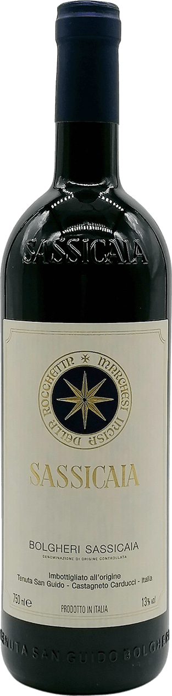

Bolgheri · Tuscan coast · validated regime
Bolgheri sits three kilometres from the Tyrrhenian, on gravel and clay that drain fast and heat unevenly. What decides the vintage isn't rainfall, it's how wide the temperature swings between a September day and its night. We measure that gap, then seal our prediction before any critic tastes the wine. Below, our model against the critics that move the market.
Bolgheri has no single dominant soil like Pomerol's blue clay, its parcels mix calcareous marl, stone, and clay in patches. What repeats every vintage is the diurnal temperature range in September: hot days that ripen sugar, cool nights that hold acidity. A wide DTR builds structure; a narrow one flattens the wine. This single axis explains what rainfall alone cannot. The white line is us. The dashed line is Wine-Searcher aggregate score history.
Both predictions are sealed and verifiable on the Bitcoin blockchain.

Our target is the Wine-Searcher aggregate, not a single critic. At Bolgheri the signal is thinner than Pomerol's, one physical axis instead of two, and the model knows it: 21% of variance is an honest number for a coastal, mixed-soil appellation, not a rounding error we're hiding. The DTR coefficient, +0.93pt per °C of swing, is the whole story here.
A model that hides its edges is a sales pitch, not a science. Bolgheri has a real limit, and we say so.
Pomerol's blue clay gave us soil moisture and vapour pressure deficit, two orthogonal signals. Bolgheri's mixed gravel-clay-marl soils give us one clean signal: September's day-night temperature swing. We didn't force a second axis that isn't there. Less signal, told honestly, beats a fabricated one.
Producers describe a maritime breeze that tempers the heat every afternoon. We haven't quantified it. It's the next axis we're building, not a gap we're pretending isn't there.
Climate reanalysis from public European sources. No proprietary feed, no relationship with anyone who sells wine.
Every prediction is hashed and timestamped on the Bitcoin blockchain before a critic tastes the vintage. The record predates the verdict.
We use Leave-One-Vintage-Out (LOVO) validation: the tested year never enters its own training set. Every accuracy figure on this page was earned on data the model had never seen.
We tested everything Pomerol taught us. Most of it didn't transfer. What remained is what you see.
| Hypothesis tested | Result |
|---|---|
| Soil moisture (Pomerol model, transferred) | ∗∗∗ |
| Vapour Pressure Deficit | ∗∗∗ |
| Total September rainfall | ∗∗∗ |
| Growing degree days | ∗∗∗ |
| Spring frost signal | ∗∗∗ |
| DTR September (diurnal range) | active ✓ |
"Pomerol taught us to read the ground. Bolgheri taught us to read the sky's swing between day and night."TerroiRisk · 2026
September 2025's average diurnal temperature range across Bolgheri measured 7.74°C. Every degree of additional swing adds roughly 0.93 points to the model's estimate, holding other factors constant. This is not a proxy for something else, it is the direct physical driver.
This is an 8-producer pool with R² = 0.21, honest and modest next to Pomerol's 0.69. We publish it anyway, because a weaker true signal beats a stronger fabricated one, and because this is the foundation we build the maritime-breeze axis on next.